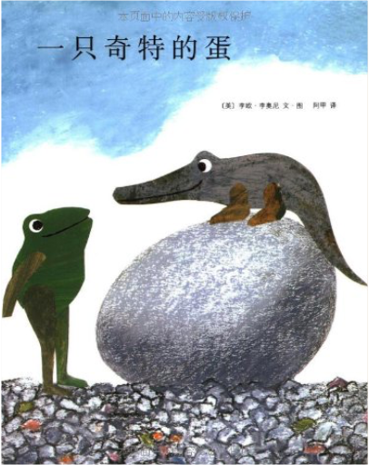爱心树绘本馆216:一只奇特的蛋  《爱心树绘本馆216:一只奇特的蛋》写了：哥尼流是一只直立着身子走路的高大鳄鱼，可就因为这样他遭到了大家的排斥。于是，他离开了家。途中，他向一只猴子学习了倒立和用尾巴倒挂在树上的技巧。 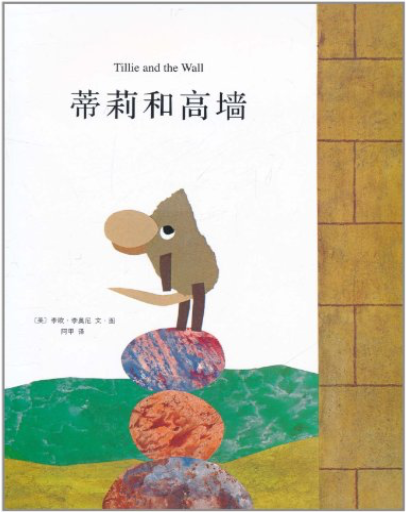蒂莉和高墙 《蒂莉和高墙》内容简介：从老鼠们开始记事时起，那堵墙就一直立在那里。他们从来没去注意过它，也从没想过问一问，墙的另一边是什么样的。只有年纪最轻的那只小老鼠蒂莉，总是琢磨着墙的另一边到底有一个怎样的世界，并下定决心一定要去那一边看看。她带领着朋友们往上爬，用铁钉钻，沿着墙向尽头走，可是都没有成功。后来，蒂莉受到蚯蚓的启发，想到了一个好办法。就这样，蒂莉终于看到了墙那边的世界。 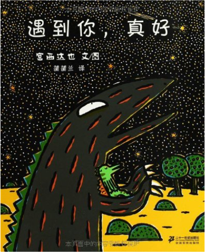蒲蒲兰绘本馆:你看起来好像很好吃等 1.永远永远爱你 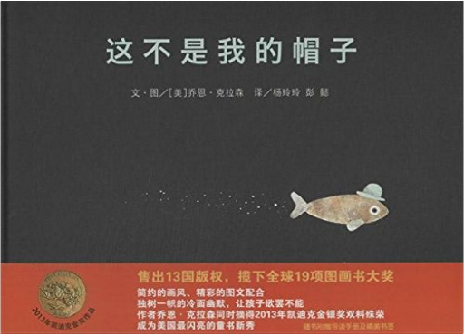这不是我的帽子 《信谊世界精选图画书:这不是我的帽子》内容简介：一条小鱼戴着一顶圆圆的蓝色帽子游进我们的视野，它一边往前游，一边自言自语：“这不是我的帽子，是我偷来的。帽子的主人可能不会发现，因为它睡着了。就算发现了，也不会知道是我偷的；就算知道是我偷的，它也不会找到我……”它戴着帽子一路潜逃，可是就在它浑然不觉的时候，帽子的主人，一条很大很大的大鱼已经睁开了眼睛，悄悄地尾随其后……继《我要把我的帽子找回来》大获成功后，乔恩•克拉森又推出了这本全新的“偷帽子”故事：同样是面无表情的动物角色，同样把冷幽默风格和黑色幽默体现得淋漓尽致。作者在画面细节的描绘上运用了许多微妙的技巧，尤其是小鱼的眼神变化极有喜感。故事充满戏剧性，风格独特，能带给孩子不一样的欢乐！ 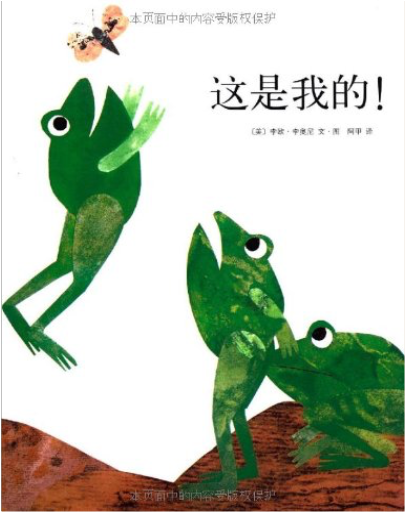这是我的! 《这是我的!》内容简介：彩虹池塘中央的小岛上，住着三只自私的青蛙，他们一天到晚不停地争吵，生怕对方占了便宜。有一天，暴雨来袭，小岛即将被吞没，他们挤在一起，共同面对困难。洪水退去之后，青蛙们不再吵闹，而是一起玩耍，一起分享快乐…… 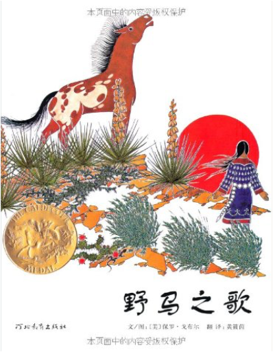野马之歌 《野马之歌》内容简介：扑面而来的是一种原始而质朴的神秘气息。这则故事来源于一个古老的印第安传说：它描述了一位爱马成痴的印第安少女，在一场罕见的暴风雨中和马群来到了一片遥远的、只看得到星星、月亮与悬崖的陌生地方，但她并没有为这种迷路而哭泣、沮丧，相反，她把这看成是一种祝福，因为尽管她爱她部落的人民，但从内心深处她似乎和野马群——尤其是其中一匹漂亮的种马，野马的领袖——有着一种更深的、近乎神圣的精神联系。暴风雨给了她实现梦想的机会…… 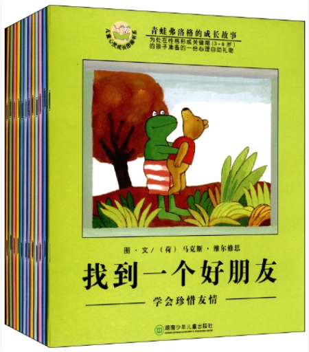青蛙弗洛格的成长故事 《青蛙弗洛格的成长故事(套装共12册)》有助于孩子心灵成长的心理教育故事。每个故事都自然流露出某种重要的主题，充满了想像力。文图都是马克斯·维尔修思创作的，文字透着生动和浅浅的幽默，图画则是鲜有的简笔画风格，被西方艺术家誉为“简笔画世界的杰作”。目前该系列已经被翻译成38种语言，全球销量逾百万册。 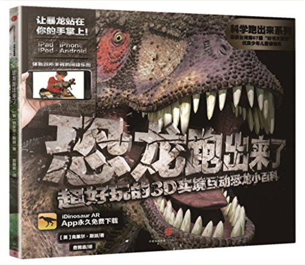恐龙跑出来了：超好玩的3D实境互动恐龙小百科（科学跑出来系列）[英]克莱尔·斯派 《科学跑出来》系列利用AR（增强现实）技术与科普知识相结合，每册图书32页，包含4-5个互动增强现实动画，知识与互动体验完美搭配，是全新的划时代儿童科普书，让孩子爱上科学！ 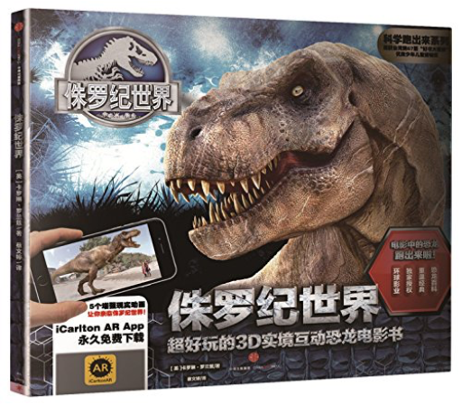侏罗纪世界：超好玩的3D实境互动恐龙电影书（科学跑出来系列）[英]卡洛琳·罗兰兹 《科学跑出来》系列利用AR（增强现实）技术与科普知识相结合，每册图书32页，包含4-5个互动增强现实动画，知识与互动体验完美搭配，是全新的划时代儿童科普书，让孩子爱上科学！ 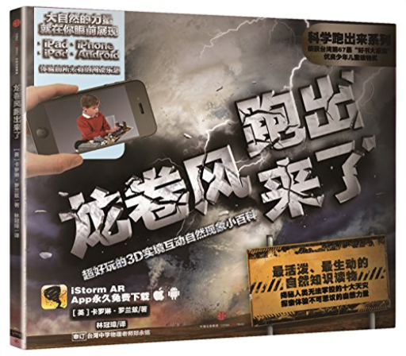龙卷风跑出来了：超好玩的3D实境互动自然现象小百科（科学跑出来系列）[英]卡洛琳·罗兰兹 《科学跑出来》系列利用AR（增强现实）技术与科普知识相结合，每册图书32页，包含4-5个互动增强现实动画，知识与互动体验完美搭配，是全新的划时代儿童科普书，让孩子爱上科学！ 夏山学校A.S.尼尔 (A.S.Neill) 《夏山学校》是夏山学校创始人A.S.尼尔所著，讲述了许多孩子来夏山之前厌学、自卑、叛逆，是家长和老师眼中的“问题儿童”；来到夏山后，他们发生了翻天覆地的变化：自觉自发地学习，独立自主地生活，充满自信，也懂得爱己爱人，每个孩子的身心都得到充分自由的发展。本书通过丰富的事例、详尽的心理分析和论证，清晰地阐明了作者的教育理念，即主张尊重孩子的天性，以爱鼓励孩子自由发展。 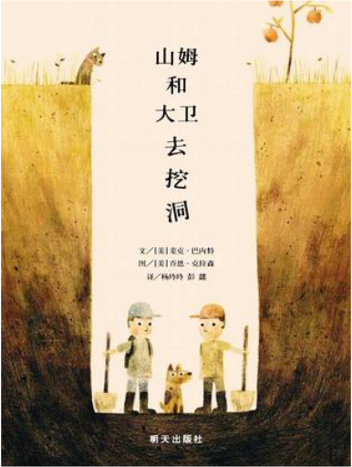山姆和大卫去挖洞麦克·巴内特 (Mac Barnett) 《山姆和大卫去挖洞》内容简介：山姆和大卫挖了一个洞，他们要一直挖下去，直到挖到了不起的东西为止。 |
 Made with Delicious Library
Made with Delicious LibraryGuangzhou, AP zipflap congrotus delicious library Yv, Jarod